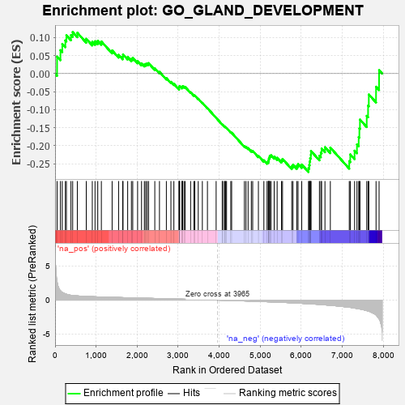
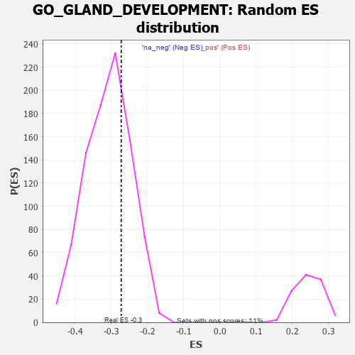

| | | Dataset | 7d |
| Phenotype | NoPhenotypeAvailable |
| Upregulated in class | na_neg |
| GeneSet | GO_GLAND_DEVELOPMENT |
| Enrichment Score (ES) | -0.27275062 |
| Normalized Enrichment Score (NES) | -0.885526 |
| Nominal p-value | 0.7034949 |
| FDR q-value | 0.9623494 |
| FWER p-Value | 1.0 |
Table: GSEA Results Summary

Fig 1: Enrichment plot: GO_GLAND_DEVELOPMENT
Profile of the Running ES Score & Positions of GeneSet Members on the Rank Ordered List
| PROBE | GENE SYMBOL | GENE_TITLE | RANK IN GENE LIST | RANK METRIC SCORE | RUNNING ES | CORE ENRICHMENT | | 1 | TGFB3 | | | 49 | 2.654 | 0.0472 | No |
| 2 | SP3 | | | 131 | 1.391 | 0.0650 | No |
| 3 | FOXF1 | | | 176 | 1.136 | 0.0823 | No |
| 4 | INSM1 | | | 250 | 0.939 | 0.0919 | No |
| 5 | HGF | | | 276 | 0.870 | 0.1063 | No |
| 6 | BAX | | | 387 | 0.711 | 0.1066 | No |
| 7 | CCNB2 | | | 429 | 0.672 | 0.1150 | No |
| 8 | SRF | | | 542 | 0.615 | 0.1131 | No |
| 9 | ZIC3 | | | 760 | 0.542 | 0.0965 | No |
| 10 | WLS | | | 907 | 0.505 | 0.0881 | No |
| 11 | MTX1 | | | 973 | 0.489 | 0.0897 | No |
| 12 | AKT1 | | | 1040 | 0.476 | 0.0909 | No |
| 13 | SRC | | | 1128 | 0.459 | 0.0891 | No |
| 14 | FKBP4 | | | 1390 | 0.412 | 0.0642 | No |
| 15 | CSN3 | | | 1548 | 0.383 | 0.0520 | No |
| 16 | RXRA | | | 1647 | 0.365 | 0.0469 | No |
| 17 | CSN2 | | | 1656 | 0.363 | 0.0532 | No |
| 18 | LRP5 | | | 1769 | 0.342 | 0.0459 | No |
| 19 | SMAD4 | | | 1860 | 0.326 | 0.0410 | No |
| 20 | CUL3 | | | 1893 | 0.321 | 0.0434 | No |
| 21 | RAF1 | | | 2011 | 0.303 | 0.0346 | No |
| 22 | BMP7 | | | 2107 | 0.290 | 0.0284 | No |
| 23 | DDR1 | | | 2176 | 0.280 | 0.0254 | No |
| 24 | OTP | | | 2209 | 0.275 | 0.0269 | No |
| 25 | CREB1 | | | 2243 | 0.269 | 0.0281 | No |
| 26 | EAF2 | | | 2278 | 0.263 | 0.0291 | No |
| 27 | MET | | | 2430 | 0.240 | 0.0147 | No |
| 28 | SRP54 | | | 2544 | 0.220 | 0.0048 | No |
| 29 | PHB2 | | | 2712 | 0.197 | -0.0124 | No |
| 30 | PCK2 | | | 2823 | 0.180 | -0.0228 | No |
| 31 | FGFR2 | | | 2895 | 0.167 | -0.0284 | No |
| 32 | WNT4 | | | 3023 | 0.146 | -0.0416 | No |
| 33 | BRCA2 | | | 3024 | 0.146 | -0.0387 | No |
| 34 | SEC63 | | | 3025 | 0.146 | -0.0357 | No |
| 35 | LEF1 | | | 3037 | 0.144 | -0.0342 | No |
| 36 | LHX3 | | | 3092 | 0.138 | -0.0383 | No |
| 37 | RREB1 | | | 3099 | 0.137 | -0.0363 | No |
| 38 | GPX1 | | | 3109 | 0.135 | -0.0347 | No |
| 39 | BTBD7 | | | 3143 | 0.131 | -0.0363 | No |
| 40 | PAX6 | | | 3170 | 0.127 | -0.0370 | No |
| 41 | SMAD3 | | | 3303 | 0.105 | -0.0517 | No |
| 42 | PPAT | | | 3382 | 0.091 | -0.0598 | No |
| 43 | MED1 | | | 3405 | 0.089 | -0.0608 | No |
| 44 | GLI1 | | | 3489 | 0.079 | -0.0697 | No |
| 45 | MAPK3 | | | 3589 | 0.062 | -0.0811 | No |
| 46 | NF1 | | | 3713 | 0.040 | -0.0959 | No |
| 47 | NRG3 | | | 3925 | 0.005 | -0.1226 | No |
| 48 | CSF1 | | | 4074 | -0.019 | -0.1410 | No |
| 49 | WNT2 | | | 4084 | -0.021 | -0.1417 | No |
| 50 | ABL1 | | | 4125 | -0.027 | -0.1463 | No |
| 51 | HMGCL | | | 4141 | -0.031 | -0.1475 | No |
| 52 | HNF4A | | | 4157 | -0.034 | -0.1488 | No |
| 53 | PDX1 | | | 4179 | -0.038 | -0.1506 | No |
| 54 | WNT11 | | | 4282 | -0.056 | -0.1625 | No |
| 55 | TBX2 | | | 4303 | -0.060 | -0.1638 | No |
| 56 | GATA3 | | | 4614 | -0.120 | -0.2008 | No |
| 57 | TAF10 | | | 4652 | -0.128 | -0.2029 | No |
| 58 | ARF6 | | | 4704 | -0.140 | -0.2065 | No |
| 59 | RTN4 | | | 4783 | -0.154 | -0.2133 | No |
| 60 | FBXW7 | | | 4816 | -0.161 | -0.2142 | No |
| 61 | PRKDC | | | 4955 | -0.189 | -0.2279 | No |
| 62 | DRD2 | | | 5088 | -0.221 | -0.2402 | No |
| 63 | TBX1 | | | 5166 | -0.241 | -0.2451 | No |
| 64 | SMO | | | 5195 | -0.247 | -0.2437 | No |
| 65 | ASH1L | | | 5203 | -0.248 | -0.2396 | No |
| 66 | ATM | | | 5210 | -0.249 | -0.2353 | No |
| 67 | CLCN2 | | | 5224 | -0.250 | -0.2320 | No |
| 68 | USF2 | | | 5232 | -0.252 | -0.2278 | No |
| 69 | PTEN | | | 5262 | -0.261 | -0.2262 | No |
| 70 | TCF21 | | | 5340 | -0.283 | -0.2303 | No |
| 71 | LATS1 | | | 5412 | -0.298 | -0.2333 | No |
| 72 | VDR | | | 5517 | -0.325 | -0.2400 | No |
| 73 | FGFR1 | | | 5543 | -0.332 | -0.2364 | No |
| 74 | ELF3 | | | 5768 | -0.396 | -0.2569 | No |
| 75 | ADA | | | 5798 | -0.405 | -0.2524 | No |
| 76 | CDO1 | | | 5892 | -0.432 | -0.2555 | No |
| 77 | STK11 | | | 5922 | -0.443 | -0.2503 | No |
| 78 | XBP1 | | | 6011 | -0.475 | -0.2519 | No |
| 79 | RAG1 | | | 6176 | -0.530 | -0.2621 | Yes |
| 80 | ATP7B | | | 6194 | -0.535 | -0.2534 | Yes |
| 81 | INSR | | | 6204 | -0.538 | -0.2437 | Yes |
| 82 | SMAD2 | | | 6216 | -0.541 | -0.2342 | Yes |
| 83 | RGN | | | 6233 | -0.547 | -0.2252 | Yes |
| 84 | CDC42 | | | 6236 | -0.548 | -0.2144 | Yes |
| 85 | UMPS | | | 6442 | -0.637 | -0.2277 | Yes |
| 86 | SOX2 | | | 6477 | -0.652 | -0.2188 | Yes |
| 87 | LAMA1 | | | 6496 | -0.659 | -0.2078 | Yes |
| 88 | ROBO1 | | | 6577 | -0.699 | -0.2039 | Yes |
| 89 | EGFR | | | 6708 | -0.765 | -0.2050 | Yes |
| 90 | AR | | | 7169 | -1.046 | -0.2424 | Yes |
| 91 | TSPO | | | 7194 | -1.065 | -0.2240 | Yes |
| 92 | MSX2 | | | 7299 | -1.171 | -0.2136 | Yes |
| 93 | WDR35 | | | 7357 | -1.225 | -0.1962 | Yes |
| 94 | CELA1 | | | 7399 | -1.265 | -0.1759 | Yes |
| 95 | TPH1 | | | 7416 | -1.286 | -0.1520 | Yes |
| 96 | OTC | | | 7430 | -1.305 | -0.1274 | Yes |
| 97 | ASNS | | | 7595 | -1.547 | -0.1170 | Yes |
| 98 | PKD1 | | | 7628 | -1.611 | -0.0887 | Yes |
| 99 | PTF1A | | | 7646 | -1.637 | -0.0578 | Yes |
| 100 | PKD2 | | | 7822 | -2.167 | -0.0364 | Yes |
| 101 | CAV3 | | | 7896 | -2.739 | 0.0095 | Yes |
Table: GSEA details [plain text format]

Fig 2: GO_GLAND_DEVELOPMENT: Random ES distribution
Gene set null distribution of ES for GO_GLAND_DEVELOPMENT